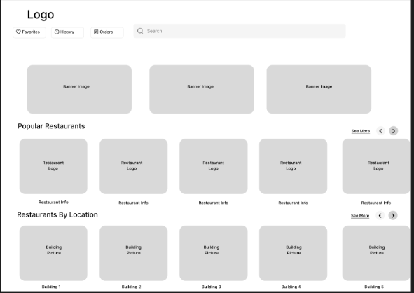
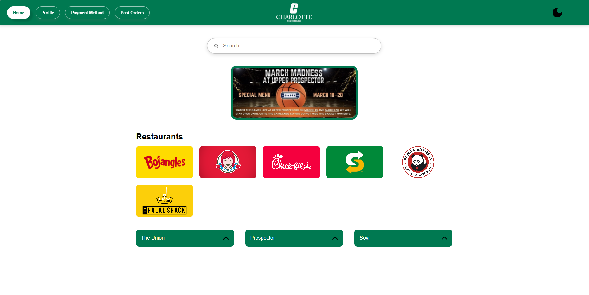
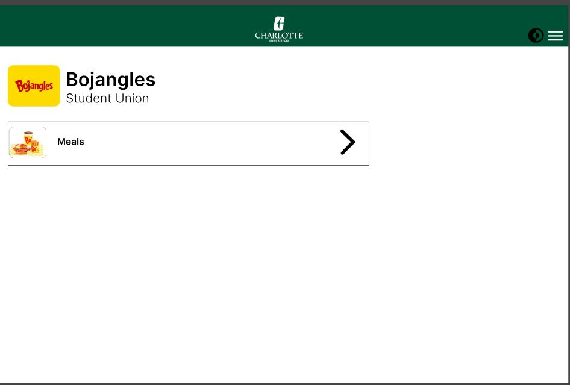
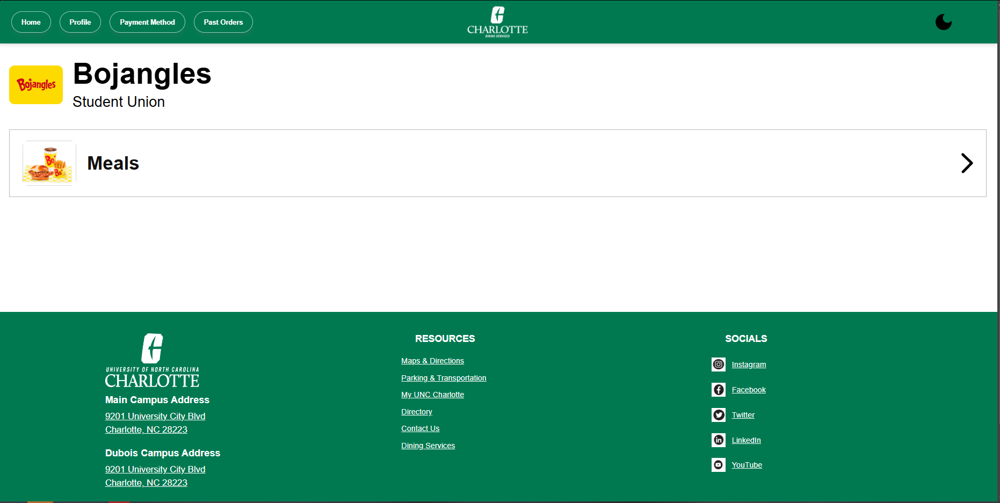
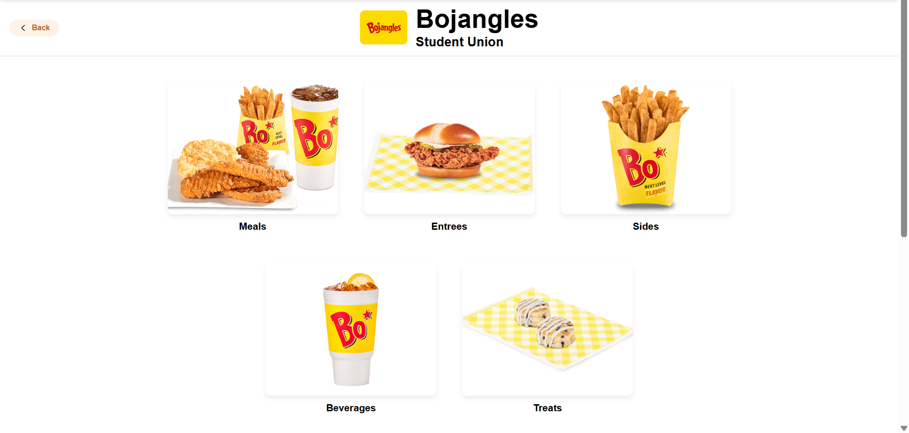
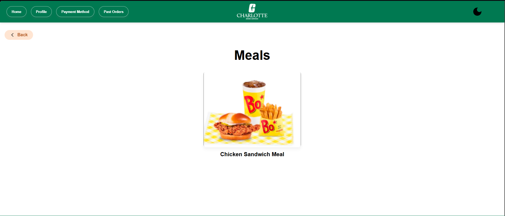

Mobile App Redesign Project
My name is Lucas Manyvongsa, and I worked on redesigning the mobile order app for the university's dining options on campus. We noticed with a first look and prior experience using the app that it was mostly functional, but could use improvements in certain areas: like the map function being clearer, bringing past orders to the fore front and not hiding in deep in menus or flows, like dark mode in the profile page.
Key stages when tackling on this project, was starting with sketches and low-fidelity wireframes and asking others with the expectation of them using some kind of food ordering app beforehand, and more wanted feedback on what we could have ignored from a user standpoint as we were redesigning it.

After getting feedback on the low-fidelity wireframes, we moved on to high-fidelity wireframes and prototyping. We used Figma for this stage, and we were able to create a more polished and interactive prototype that we could test with users. We also made sure to incorporate the feedback we received from the low-fidelity wireframes into our high-fidelity designs and then eventually our final product.

Previous iterations of the design had more whitespace, icons and text that were smaller, and a more muted color scheme. So changing color scheme, adding an hamburger menu for navigation helped with flow, footer to get rid of whitespace, and changing the dark mode icon and orientation of certain elements led to overall better user satifaction and usability.


Overall, the redesign of the mobile order app was a success. We were able to create a more user-friendly and visually appealing app that met the needs of our users. But we could always improve on other aspects.

This is one of the screens we would like to improve on more.

Previous iterations of the design
View the redesign yourself!